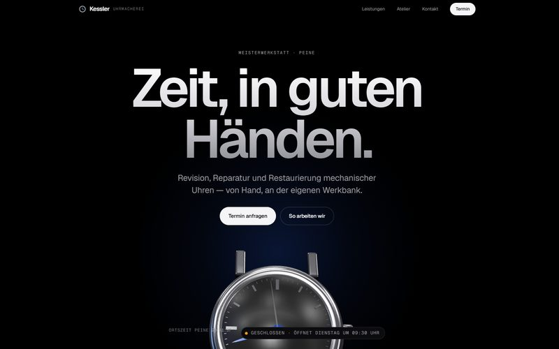
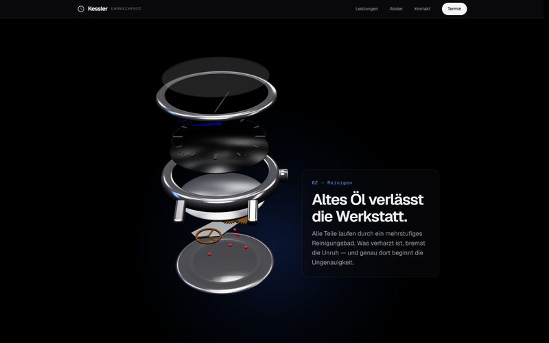

Websites — 2026
Atelier Kessler
Dunkle Produktseite im Stil von Apple: eine in Blender gebaute Uhr zerlegt sich beim Scrollen in ihre Einzelteile und setzt sich wieder zusammen.

Musterprojekt. Betrieb, Anschrift und Inhalte sind frei erfunden, die Umsetzung ist es nicht. Die Fotos stammen von Unsplash, das 3D-Modell ist eigene Arbeit in Blender.
Überblick
Fünf Seiten für eine erfundene Meisterwerkstatt in Peine. Die Startseite erzählt eine Revision in fünf Kapiteln — Öffnen, Reinigen, Prüfen, Ölen, Regulieren — und die Uhr dahinter zeigt jeden Schritt als Explosionsansicht.
Die Aufgabe
Uhrmacherei ist unsichtbare Arbeit: der Kunde gibt eine Uhr ab und bekommt sie Wochen später zurück. Was dazwischen passiert und warum eine Revision ihren Preis hat, sieht niemand.
Der Ansatz
Die Arbeit selbst zeigen. Statt Fotos vom Ladengeschäft nimmt die Seite die Uhr beim Scrollen auseinander, Teil für Teil, und erklärt dabei, was an der Werkbank geschieht.

Das System
Das Modell ist in Blender aus 19 benannten Teilen gebaut und als GLB exportiert. Three.js verschiebt die Teile entlang der Uhrachse je nach Scrollstand, die Zeiger folgen der echten Uhrzeit, Räder und Unruh laufen. Ohne WebGL steht ein in Blender gerendertes Standbild. Schrift Geist, Akzent in Blaustahl.
Ergebnis
Statischer Erstaufruf 149 KB, Three.js und Modell kommen danach. Keine externe Ressource, keine Konsolenfehler, kein Überlauf bei 390 px. Kontraste gerechnet: 7,5:1 für Nebentext.